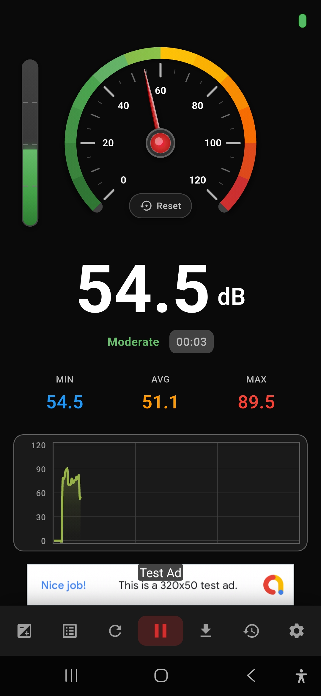
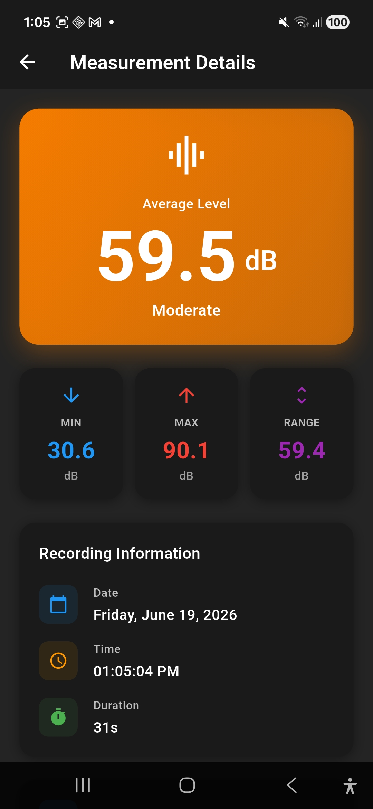
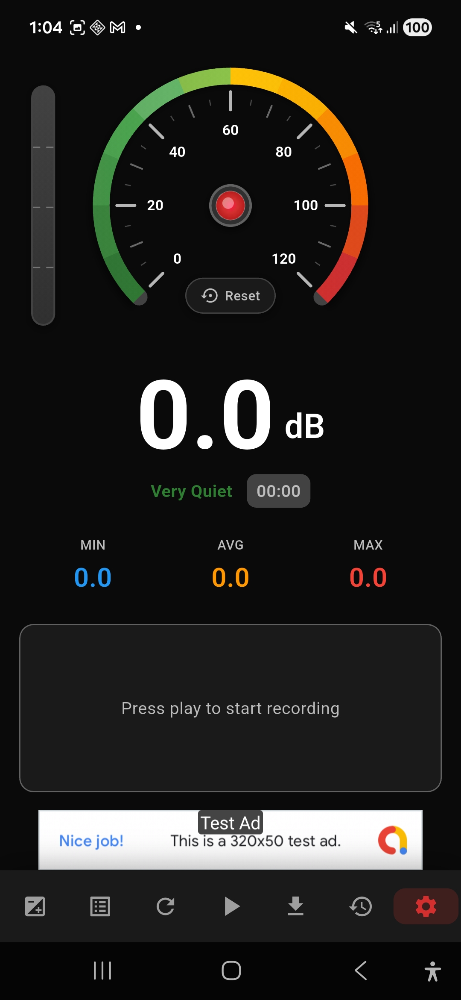
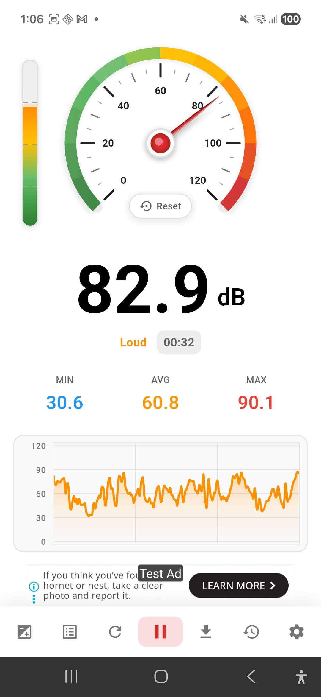
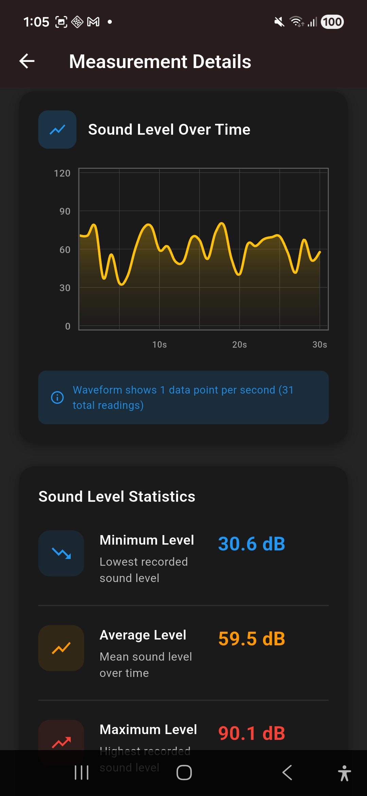
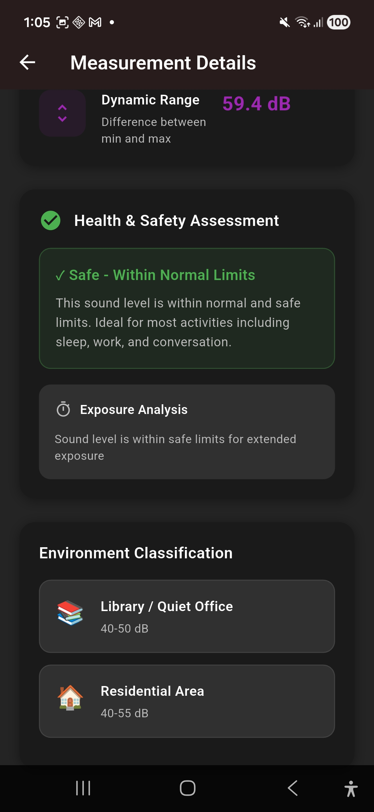
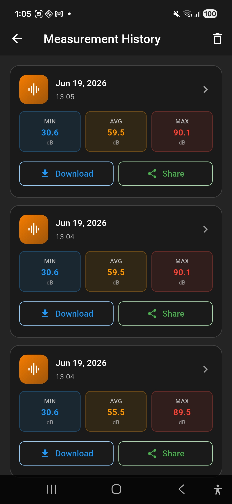
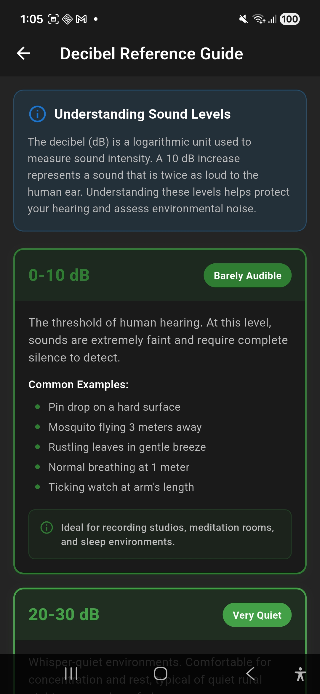
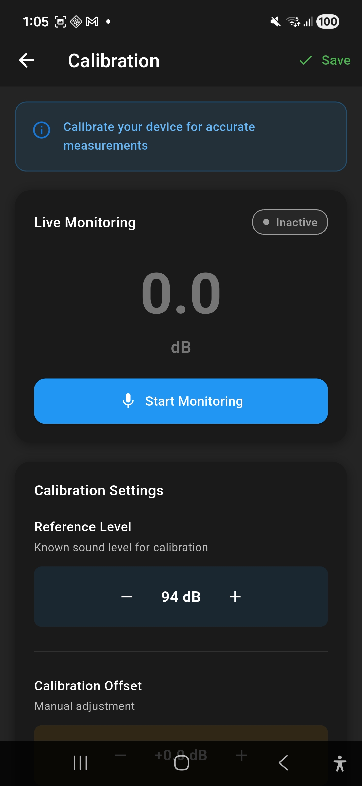

Turn your phone into a professional-grade sound level meter. Live decibel readings, colour-coded gauge, waveform history, health analysis, and one-tap sharing — completely free.
A real-time speedometer-style gauge sweeps from green through yellow, orange, and red as sound levels rise. Instantly see whether you're in a safe or dangerous noise environment.
A continuously updating waveform chart plots every second of audio. Watch noise patterns unfold in real time — colour-coded green for quiet, amber for moderate, red for danger.
Three live statistics track the quietest, average, and loudest readings of your session simultaneously. Know your full noise exposure at a glance.
Every saved measurement gets a full health assessment. The app tells you whether the sound level is safe, flags extended exposure risks, and classifies your environment (Library, Office, Street, Concert, etc.).
Every recording is saved with its date, time, duration, and MIN/AVG/MAX stats. Browse your history, view detailed analysis for any session, download results, or share them.
Export any measurement directly from the history screen. Share results as a file or send them to colleagues, doctors, or landlords to document noise issues.
Set a known reference level (default 94 dB) and apply a manual offset to calibrate your device's microphone for more accurate professional-grade readings.
Available in English, Hindi, Korean, Bengali, Indonesian, Turkish, Vietnamese, Urdu, Polish, and more — so everyone can measure sound in their own language.
The moment you press play, Sound Meter Pro starts capturing decibels from your phone's microphone. The needle moves in real time, the level bar pulses on the side, and the waveform graph begins building below.


Tap any saved recording to see a complete breakdown: average level, dynamic range, date, time, and duration — all in one clear screen.

Ready to Record
Live Dark Mode

Live Light Mode
Measurement Details

Waveform & Stats

Health Assessment

Measurement History

Decibel Reference Guide

Calibration
10+ Languages
Sound Meter Pro doesn't just measure — it interprets. After every recording, the app gives you a plain-English health and safety verdict with environment classification, so you always know what the numbers mean for your wellbeing.
The decibel scale is logarithmic — a 10 dB increase sounds twice as loud to the human ear. Here's your quick reference guide, built right into the app.
The threshold of human hearing. Pin drop, rustling leaves, normal breathing at arm's length.
Whisper-quiet environments. Recording studios, meditation rooms, deep countryside.
Library, quiet office, light rainfall. Comfortable for concentration and rest.
Normal conversation, background music, open-plan office. Safe for long-term exposure.
Busy street, vacuum cleaner, alarm clock. Begin to limit prolonged exposure.
Power tools, concerts, jet engines. Risk of permanent hearing damage without protection.
Your entire measurement history is stored and organised by date and time. Each entry shows MIN, AVG, and MAX at a glance — tap through for the full waveform and health report.
Sound Meter Pro works for everyone, worldwide. Choose your language on first launch and the entire app adapts instantly.
Every phone microphone is slightly different. Sound Meter Pro includes a full calibration screen where you can set a known reference level and apply a manual offset to match your device to professional sound level meters.
Free to download. No sign-up required. Works on any Android device with a microphone.